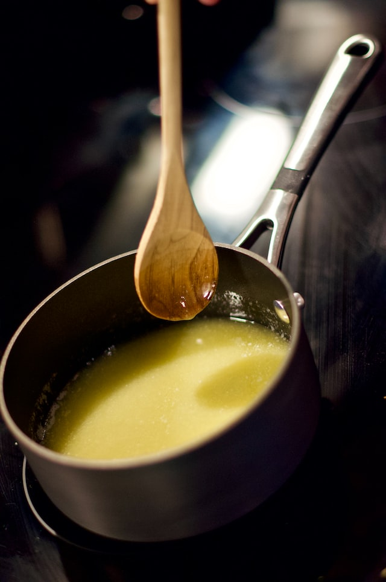

Manteiga Noisette

Descrição do prato
Manteiga Noisette, ou beurre noisette, é uma manteiga "queimada", com um
sabor e aroma puxado para o de nozes. É ótima para usar em receitas, enriquecendo
o sabor e aroma dos seus pratos!
Ingredientes
- Um tablete de manteiga sem sal
Instruções
- Corte o tablete de manteiga em cubos, e coloque eles em
uma panela de fundo grosso, de preferência inox. Uma panela de
cor clara vai facilitar a visão da manteiga conforme ela escurece
- Comece a derreter a manteiga em fogo médio, mexendo com uma
espatula
- Após totalmente derretida (média de 1 minuto), a manteiga começará a ficar esbranquiçada.
Mexa de vez em quando para não deixar queimar.
- Agora a manteiga começará a borbulhar e fazer um barulho de fritura,
nessa etapa é importante mexer com frequência para não queimar. A manteiga
também vai começar a mudar de cor para um amarelo dourado (média de 4-5 minutos).
- Agora a manteiga vai começar a fazer uma espuma, abaixe o fogo. Ela também
vai mudar para um dourado mais escuro.
- Conforme ela diminui a temperatura, você vai notar uma coloração mais para o
marrom, e no fundo da panela haverá particulas mais escuras, como que um pó. Nesta
etapa você já sente o aroma marcante.
- Agora é muito importante prestar atenção e monitorar a manteiga
para não passar do ponto. Quando o aroma atingir um ponto mais caramelizado,
puxado um aroma de nozes, e as particulas escurecerem mais um pouco, desligue o fogo e
retire imediatamente. Transfira a manteiga para uma tigela para esfriar, já que
vai continuar cozinhando no seu próprio calor.
- Pronto! Agora é só usar na sua receita.
Voltar para Página Inicial